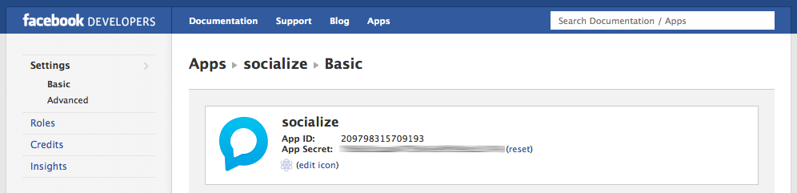
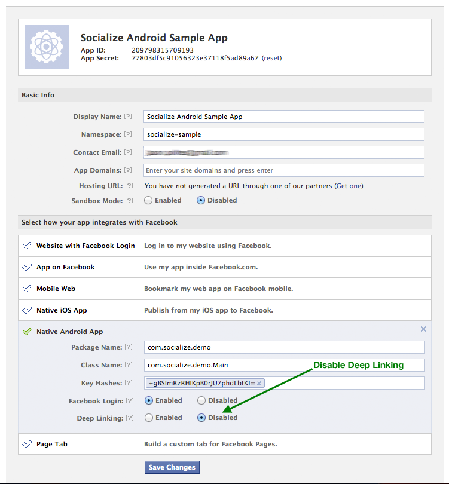

Facebook Integration¶
Introduction¶
It is strongly recommended that users be able to authenticate with Facebook when using Socialize so as to maximize the exposure and promotion of your app.
This provides significant benefits to both your application and your users including:
- Improved user experience through personalized comments
- Automatic profile creation (user name and profile picture)
- Ability to automatically post user comments and likes to Facebook
- Promotes your app on Facebook by associating your app with comments
To add Facebook authentication, you’ll need a Facebook App ID. If you already have a Facebook app, you can skip this section.
Setting up Facebook¶
Creating a Facebook Application¶
If you do not already have a Facebook app just follow these simple steps:
First create a Facebook app. Go to https://developers.facebook.com/apps and create a new app:

Your newly created Facebook app will have an ID, which is the ID used in Socialize and can be found on your Facebook Developer page:
For example, this is the Facebook App page for Socialize:
Export the hash key from your Android keystore. All Android apps are required to be signed prior to running on a device and you will already have created a keystore while building your Android app.
Your keystore contains a public key which Facebook needs to identify your Android app.
On your development machine (where you are building your Android app), run the following command to generate a key hash:
keytool -exportcert -alias androiddebugkey -keystore ~/.android/debug.keystore | openssl sha1 -binary | openssl base64Make sure you use the correct key store to generate the hash. The example above (taken from the Facebook documentation) indicates use of the debug.keystore. You should use whichever keystore you chose when building the version of your app you are going to publish.
Next add your key hash to your Facebook app.
Paste your key into the “key hash” section of your Facebook app.
Note
Ensure Android Native Deep Linking is DISABLED otherwise Facebook will bypass the Socialize SmartDownload process.
Generally it makes sense to add BOTH your debug and your release keys to Facebook to avoid problems during development and testing.
Configuring Facebook in Socialize¶
Once you have a facebook application, simply add your Facebook app Id your socialize.properties file:
# Facebook App ID
facebook.app.id=1234567890
Note
Make sure you have correctly implemented the Socialize Lifecycle to ensure Facebook auth tokens are maintained correctly.

|
Finished!
|